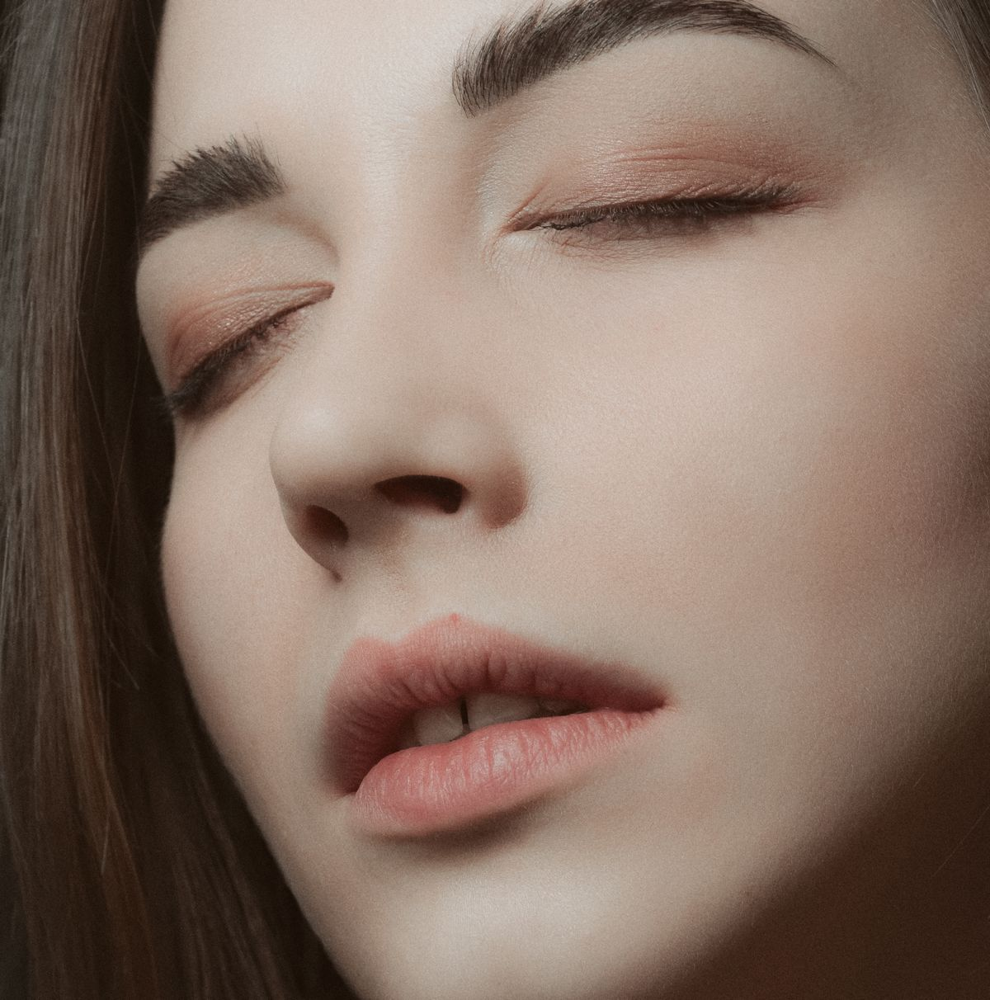

Педикюр I степени сложности
Источник цены ↗3000 ₽
Пространство красоты в Мурино. Маникюр без покрытия и педикюр — с понятным выбором процедуры.

Начните с направления. Степень сложности педикюра определяет мастер: самостоятельно выбирать её по этой странице не нужно.
Стоимость взята из открытого прайса. Перед записью подтвердите цену и состав услуги у студии.
Онлайн-запись ↗Посмотрите материалы в профиле студии и отзывы в её карточке. Здесь использована только тематическая фотография для демонстрации дизайна.
Посмотрите опубликованные услуги. Если сумма не указана, её можно уточнить напрямую у студии.
Стоимость взята из открытого прайса. Перед записью подтвердите цену и состав услуги у студии.
Такой услуги в этом списке нет. Попробуйте другое слово или уточните у студии.
Мурино
Россия, Ленинградская область, Всеволожский район, Мурино, Воронцовский бульвар, 21к2, подъезд 4
Перейдите в сервис онлайн-записи по кнопке. Услугу, мастера и время выбирают там; этот демо-сайт не бронирует визит.
Стоимость взята из открытого прайса. Перед записью подтвердите цену и состав услуги у студии. Данные просмотрены 2026-10-22.
В разделе «Работы» есть ссылки на профиль и карточку студии. Тематическое фото на первом экране не является работой этой студии.
Состав и окончательную стоимость процедуры, нужного мастера, адрес входа и доступное время. Если есть прежняя работа другого мастера, расскажите о ней при записи.